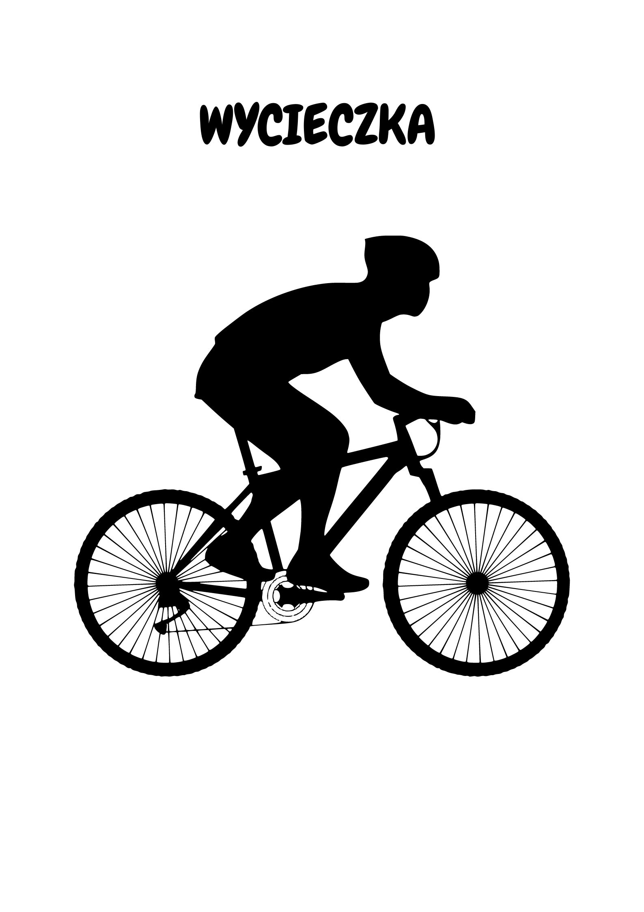

Wycieczka Rowerowa
Trasa
Trasa w google maps
Wycieczka Rowerowa
Trasa biegnie przez:
Stalowa Wola
Pysznica
Rzeczyca Długa
Lipa
Maliniec
Gwizdów
Szwedy
Pysznica
Długość Trasy to 64 km!
Czas przejechania Trasy to ok. 3 godzin i 15 minut
